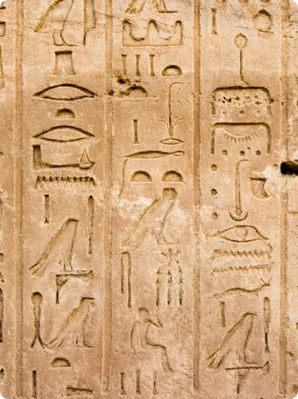
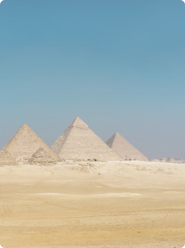

Space
고대 이집트
고대 이집트 문화는 다양한 측면에서
매우 독특하고 흥미로운 요소들을 가지고 있습니다.
아래는 고대 이집트 문화의 주요 목록입니다.
종교
이집트는 매우 다양한 종교적 신앙을 가졌습니다.
건축
대표적으로 피라미드가 있습니다.
문화적 예술
이들은 예술을 통해 신들을 숭배하며, 다양한 상황과
주제를 표현했습니다.
글씨체
이집트는 유명한 글씨체 중 하나인 "갈레오"라는
글씨체를 만들어냈습니다.

